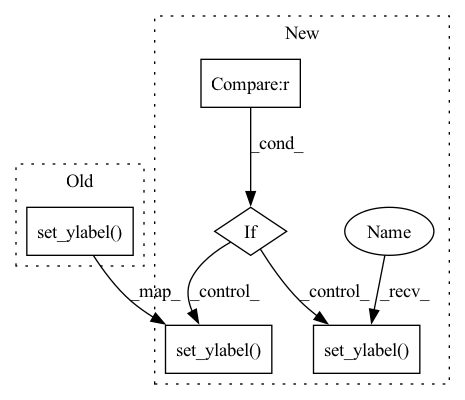

Pattern ID :20645

Before Change
ax.grid()
ax.set_xlabel("X")
ax.set_ylabel("Wavefuntion")
ax.legend()
if show_plot:
plt.show()
After Change
ax.grid()
ax.set_xlabel("X")
if load is None:
ax.set_ylabel("Wavefuntion")
else:
ax.set_ylabel("Wavefuntion %d epoch" %epoch)
ax.legend()
if show_plot:
plt.show()
In pattern: SUPERPATTERN
Frequency: 3
Non-data size: 5
Instances
Fragment ID: 66499126
Project Name: nlesc-jcer/qmctorch
Commit Name: fb5036a77f81289488f85ab4de2f5ccd3f7e4ab4
Time: 2019-08-27
Author: nicolas.gm.renaud@gmail.com
File Name: deepqmc/solver/plot_potential.py
M Class Name: AnonimousClass
N Class Name: AnonimousClass
M Method Name: plot_wf_1d(9)
N Method Name: plot_wf_1d(8)
M Parent Class:
N Parent Class:
M File Name: deepqmc/solver/plot_potential.py
N File Name: deepqmc/solver/plot_potential.py
M Start Line: 153
M End Line: 153
N Start Line: 107
N End Line: 165
'>
Before Change
fig, ax = plt.subplots(**kwargs)
ax.set_title(f"{name} partial dependence")
ax.set_xlabel(name)
ax.set_ylabel("Prediction")
ax2 = ax.twinx() // second axis for histogram
ax2.set_ylabel("Frequency")
// get values for dependency plot and histogram
After Change
fig, ax = plt.subplots(**kwargs)
ax.set_title(f"{name} partial dependence")
ax.set_xlabel(name)
if self.hparams.partial_dependence_scale == "linear":
ax.set_ylabel("Prediction")
elif self.hparams.partial_dependence_scale == "log":
ax.set_ylabel("Log prediction")
else:
raise ValueError(f"Unkown partial_dependence_scale {self.hparams.partial_dependence_scale}")
ax2 = ax.twinx() // second axis for histogram
ax2.set_ylabel("Frequency")
'>
Fragment ID: 66499127
Project Name: jdb78/pytorch-forecasting
Commit Name: 444406168910d5596f62aecabe959192f3785f1b
Time: 2020-06-29
Author: beitner.jan@bcg.com
File Name: temporal_fusion_transformer_pytorch/model/__init__.py
M Class Name: TemporalFusionTransformer
N Class Name: TemporalFusionTransformer
M Method Name: plot_partial_dependence(3)
N Method Name: plot_partial_dependence(3)
M Parent Class: pl.LightningModule
N Parent Class: pl.LightningModule
M File Name: temporal_fusion_transformer_pytorch/model/__init__.py
N File Name: temporal_fusion_transformer_pytorch/model/__init__.py
M Start Line: 869
M End Line: 869
N Start Line: 877
N End Line: 883
'>
Before Change
color=main_pallet["primary1"],
label=f"{model.name} profile",
)
ax.set_ylabel("log$_{10}$(flux)")
ax.set_xlabel(f"Radius [{rad_unit}]")
return fig, ax
After Change
label=f"{model.name} profile",
)
if model.target.zeropoint is not None:
ax.set_ylabel("Surface Brightness")
ax.invert_yaxis()
else:
ax.set_ylabel("log$_{10}$(flux)")
ax.set_xlabel(f"Radius [{rad_unit}]")
ax.set_xlim([R0,None])
return fig, ax
'>
Fragment ID: 66499128
Project Name: connorstoneastro/autoprof
Commit Name: 1755fb6a4b8078b28b0821a93913880d039f7f2f
Time: 2022-10-31
Author: connorstone628@gmail.com
File Name: autoprof/plots/profile.py
M Class Name: AnonimousClass
N Class Name: AnonimousClass
M Method Name: galaxy_light_profile(8)
N Method Name: galaxy_light_profile(7)
M Parent Class:
N Parent Class:
M File Name: autoprof/plots/profile.py
N File Name: autoprof/plots/profile.py
M Start Line: 24
M End Line: 36
N Start Line: 17
N End Line: 50